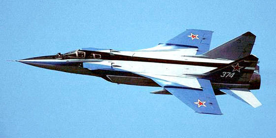

МиГ-31 — советский и российский двухместный сверхзвуковой высотный всепогодный истребитель-перехватчик дальнего радиуса действия. Разработан в ОКБ-155 (ныне АО РСК «МиГ») на базе МиГ-25 в 1970-х годах. Первый советский боевой самолёт четвёртого поколения[2]. МиГ-31 предназначен для перехвата и уничтожения воздушных целей на предельно малых, средних и больших высотах, днём и ночью, в простых и сложных метеоусловиях, при применении противником активных и пассивных радиолокационных помех, а также ложных тепловых целей. Группа из четырёх самолётов МиГ-31 способна контролировать воздушное пространство протяжённостью по фронту до 1100 км. Изначально истребитель разрабатывался для перехвата авиационных крылатых ракет[3][неавторитетный источник?] во всём диапазоне высот и скоростей, а также низколетящих спутников и автоматических дрейфующих аэростатов (АДА), запускаемых странами НАТО с 50-х годов над территорией СССР. Полки МиГ-31 несколько лет имели статус спецназа (СпН) в составе ПВО.